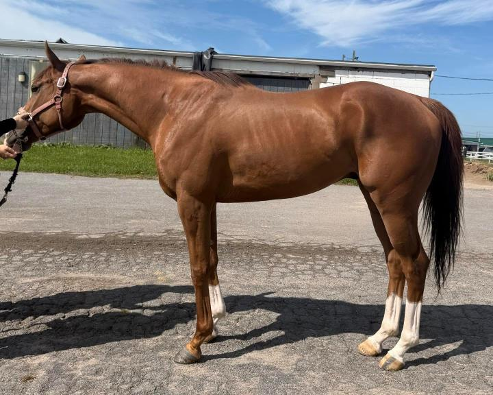
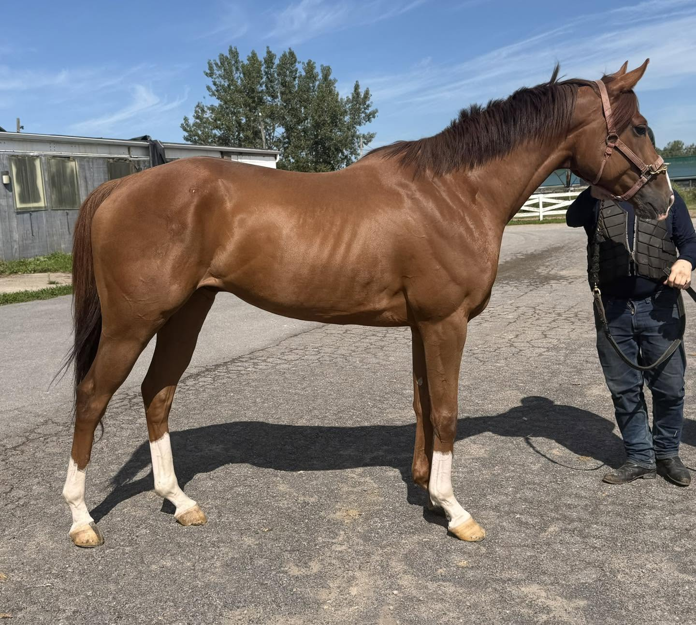
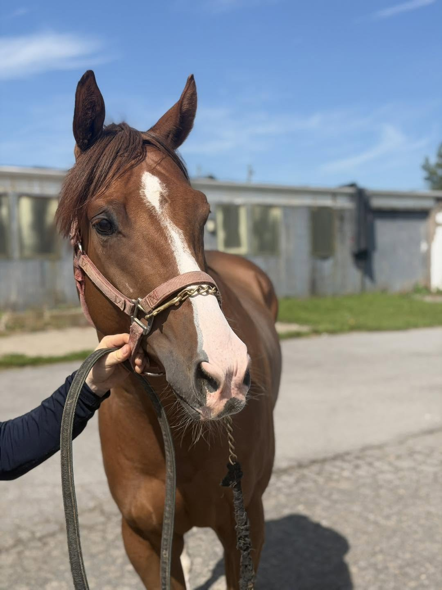
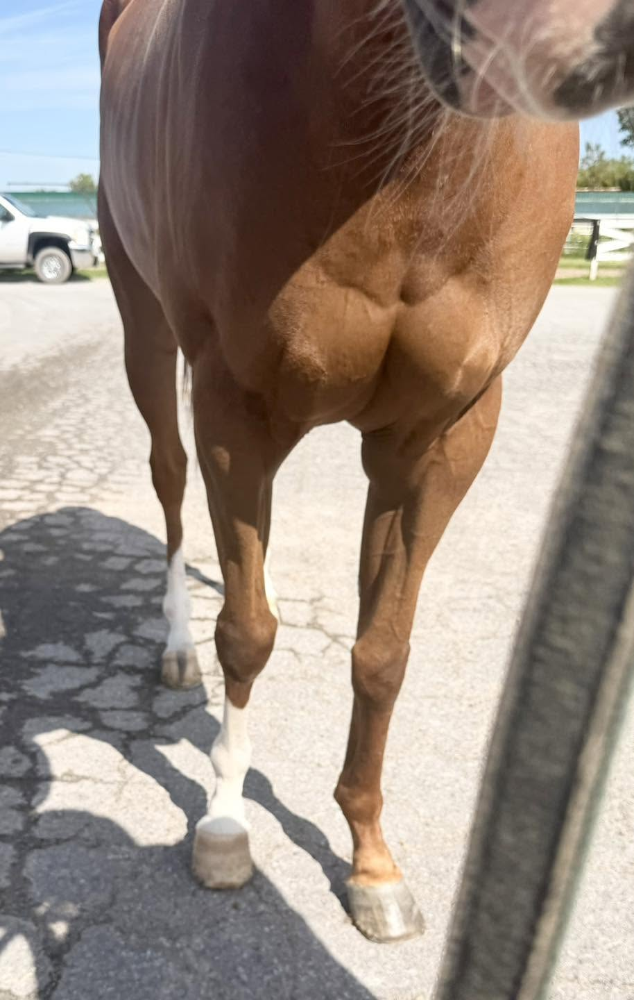
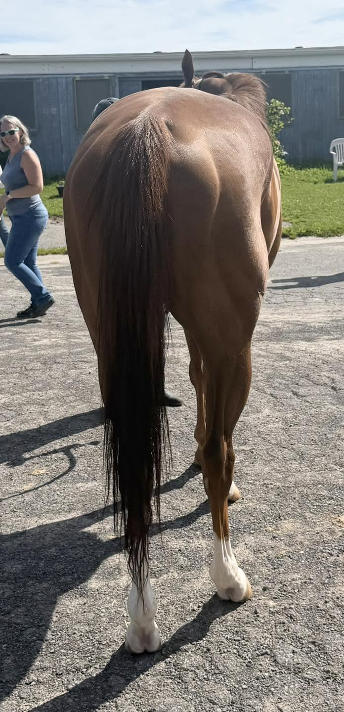
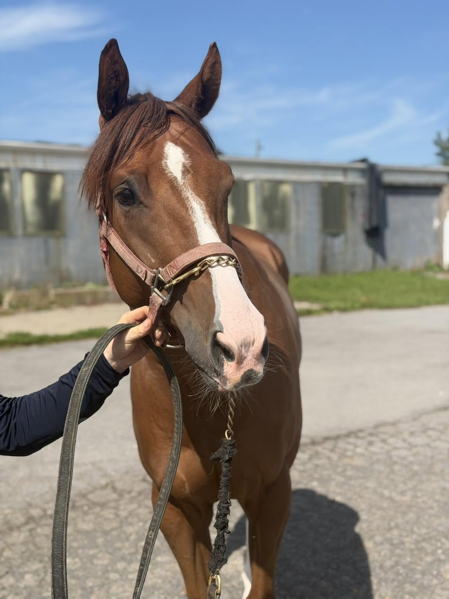
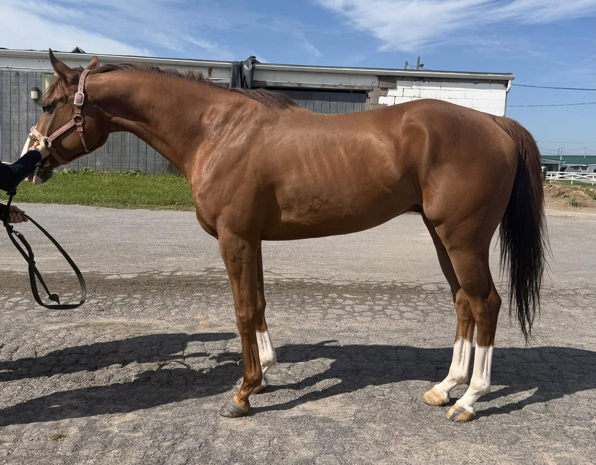
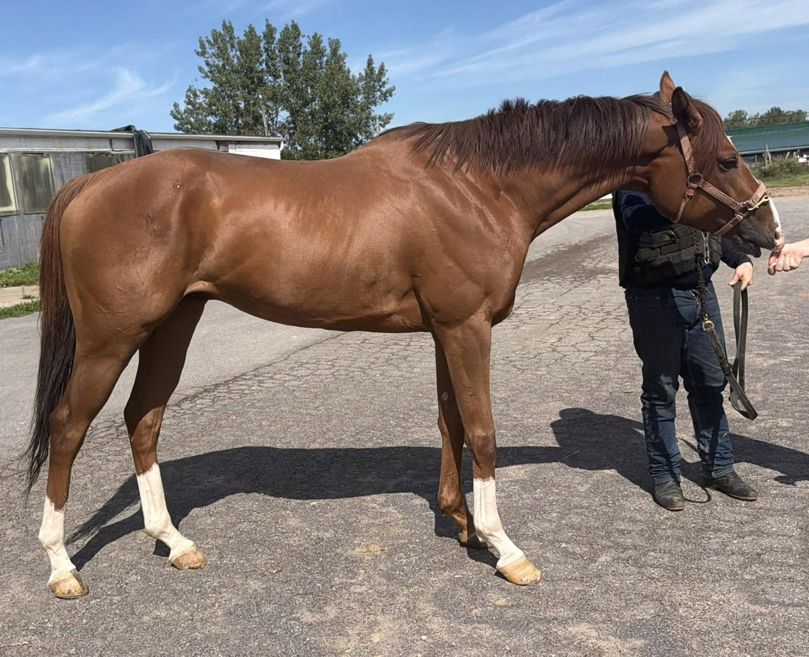

ROLLOFTHESOUL, 2021, 15.2 chestnut gelding
Located at the Finger Lakes Race Track in Farmington, NY (near Rochester, NY).
This cutie has been on our radar for a few years, initially because of his backstory. He had a rough start in life- his connection took him on as a pet project when FL trainers stepped in to take horses in a case from a breeder who had fallen on hard times and gotten into trouble. This baby arrived malnourished and severely underweight, obviously delaying his introduction to the ‘normal’ racehorse training cycle. We continued to visit him as we walked by his barn because he is always such a friendly and charming character. But he remains unsure and a tad nervous about being an actual racehorse. When we asked if, as a 5-year old, he had yet broken his maiden, his trainer just snorted. This basically summarizes his glorious race career even better than his Equibase stats ever could (10 starts with a 0-0-1 record). Where he does shine though is in his time on the farm as a “pet pony”. Over the winter, he happily settles in to farm life where the whole family loves on him! The kids can pop on, his trainer rides him around bareback in a hackamore or simple snaffle (we were told that he also has a very soft mouth). And though his connections contemplated keeping him as a track pony, they realize his true happiest self is not track life.
Today, his rough start doesn’t show- although not a huge horse, he is thick, sturdy, with solid bone, good balance, nice proportions and topline. Not that we’re biased, but he’s completely adorable and resembles an oversize pony with a gorgeous forelock. Described as being a “delight” in the barn, we were told that he has no vices- stable or ridden. His only bad habit is that he likes to “dunk” his hay into his water bucket. In his video, this cutie carries himself like a much larger horse moving with a big stride and springy steps.
He is by Solomini (Curlin) out of a Forestry mare with Danzig and Unbridled also appearing in his pedigree.
A long-time volunteer favorite, we love his story and would love to see what his next chapters bring! If you are on the hunt for your next soulmate who checks these boxes: young, fun-sized, lightly raced, sensible, cuddle-bug gelding who is already happily acclimated to life off the track… What are you waiting for? Here he is!
Please note that references will be required and checked prior to being able to purchase this horse. Please see our post pinned to the top of our FB page for more information.
Lauren Linn (585) 867-1157
$2,500, neg.
A PPE is always recommended. For information about vet practices available to do PPEs, and other important information about the buying process, please see the page. How to Buy






